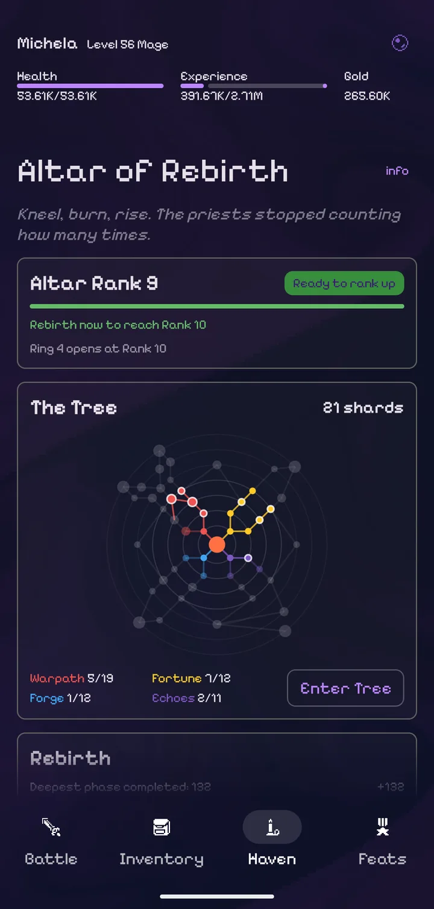
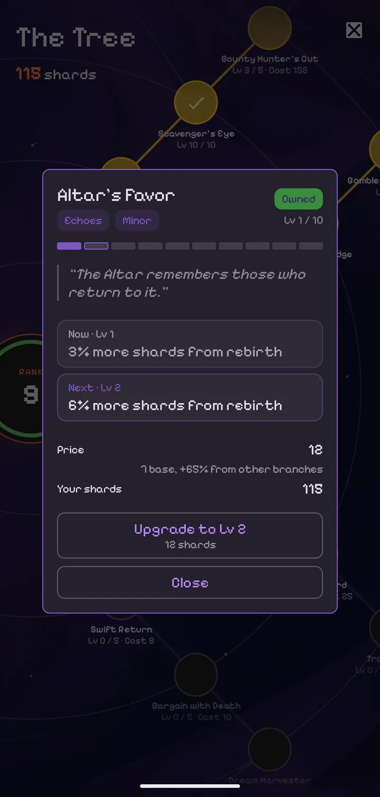

The Altar Awakens
Kneel, burn, rise. The priests stopped counting how many times.
Prestige in Void is being rebuilt from the ground up. Rebirth is no longer a costly last resort. It becomes the engine of every run, and every return makes the next one stronger.
Altar Rank 0Ring 1 opens at Rank 1
Tap or hover a star to see its perk.
See it in action
A rebirth at the Altar, a new rank, and a fresh ring of the tree to spend shards on.
Rank up the Altar
Rebirth after a deep enough run and the Altar remembers it. Your Altar Rank rises, each new rank asks for a deeper run than the last, and every rank adds to the shards you earn when you rise again.
Ranks open the perk tree one ring at a time, from the Altar outward. The deeper you have gone, the more of the constellation is yours to claim.
Altar Rank 9
Ready to rank upRebirth now to reach Rank 10
Ring 4 opens at Rank 10
Altar Rank needed to open each ring.

Four paths to power
The tree splits into four branches, each a different way to play. Perks cost more the more you have invested in other branches, so a focused build climbs further. Where two paths meet, a bridge perk opens from either side.
Warpath
Combat. The Bulwark holds the line, the Blade ends fights before they start, and Tempo runs down the middle.
Fortune
Loot and luck. Richer drops and bounties for the scavenger, better odds at Fortune's Den for the gambler.
Echoes
The rebirth itself. Start runs stronger, carry gold and gear through the flame, and climb back faster.
Forge
Crafting. Cheaper upgrades at the Workshop, richer salvage, and materials that go further.
Perks that change the run
Not just bigger numbers. The new perks change how a run starts, what you keep, and how fast you get back to where you were.
Echoed Strength
Minor"Your body remembers what your mind has forgotten."
Golden Hoard
Minor"Gold remembers its master across lifetimes."
Trailblazer
Minor"A path once walked is quicker the second time."
Heirloom
Bridge"Some things are passed down, even to yourself."
Altar's Favor
Minor"The Altar remembers those who return to it."

Choose freely. Unweave freely.
Every rebirth comes with a free Unweave: take back every shard you have spent and build again from scratch.
Try a Warpath run, then a Fortune run, then something in between. A build is never a life sentence.
Be ready when it opens
Get Void now and start your climb. The deeper your runs, the more the Altar will have waiting for you.